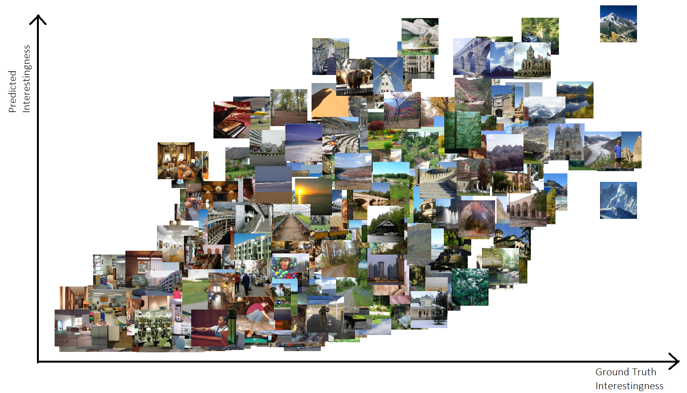
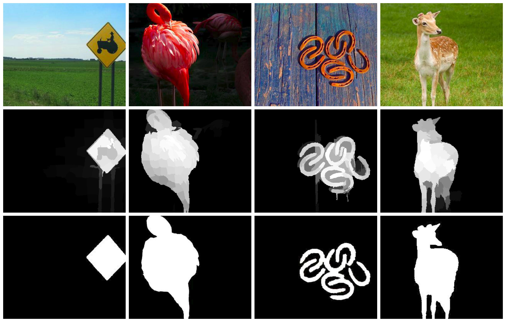
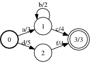
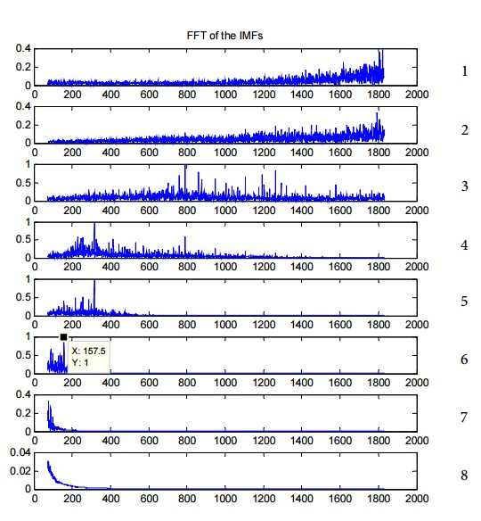

Sai Srivatsa Ravindranath
Learning Submodular Objective Functions for Improved Image Retrieval
We present a method to select a refined subset of images, given an initial list of retrieved images. The goal of any image retrieval system is to present results that are maximally relevant as well as diverse. We formulate this as a subset selection problem and we address it using submodularity. In order to select the best subset, we learn an objective function as a linear combination of submodular functions. This objective quantifies how relevant and representative a selected subset it.
Computer Vision Lab, ETH Zurich
MediaEval 2015 Workshops

Visual Interestingness of Images
We aim at getting a better understanding of what makes an image interesting. Thereby we build on recent work in areas such as image memorability and interest and image popularity. we analyze how image content and emotions are linked to interest. This gives new insights on what causes interest and allows to quantify how well it can possibly be predicted using computer vision methods. Finally, we build a predictive model using deep convolutional networks, which predicts interest more accurately that the previous state-of-the-art.
Computer Vision Lab, ETH Zurich

Saliency Detection via Objectness Measure
Salient object detection has become an important task in many image processing applications. The existing approaches exploit background prior and contrast prior to attain state of the art results. In this paper, instead of using background cues, we estimate the foreground regions in an image using objectness proposals and utilize it to obtain smooth and accurate saliency maps. We propose a novel saliency measure called ‘foreground connectivity’ which determines how tightly a pixel or a region is connected to the estimated foreground. We use the values assigned by this measure as foreground weights and integrate these in an optimization framework to obtain the final saliency maps. We extensively evaluate the proposed approach on two benchmark databases and demonstrate that the results obtained are better than the existing state of the art approaches.
Video Analytics Lab, SERC, IISc Bangalore
ICIP 2015

Automated Essay Scoring
We proposes a regression based approach for automatically scoring essays written in English. We use standard NLP techniques for obtaining the features from the text and integrate it with an existing
framework that uses vector space model to improve the results. We extensively evaluate our approach on a benchmark database (Automated Student Assessment Prize), and demonstrate that the results obtained are comparable to professional human raters while at a much faster rate. We also analyze how the essays are scored in order to get a better understanding of the proposed model.
Indian Institute of Technology, Kharagpur
Other Projects

Grammatical Error Correction
A Grammatical Error Corrector based on Round Trip Machine Translations using python and
openFST package

Comparative Analysis of Signal Processing Algorithms for Bearing Fault Diagnosis
Bearing faults of rotating machinery are observed as impulses in the vibration signal, but these signals are very noisy. This project aims at comparing how effective different Signal Processing algorithms are, in detecting these bearing faults despite the signals being noisy. Many algorithms such as envelope detection, Empirical Mode Decompositions,FFT and techniques using morphological operators etc were implemented and their performances were evaluated on data obtained from CWRU bearing data center
Image Segmentation
Using Prims algorithm, a minimum spanning tree was constructed. Costliest edges were removed to obtain disjoint regions/segments